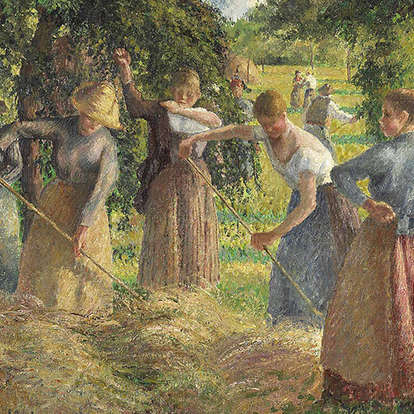

Hexagram 53 – Jian_progress: Steady Progress
Upper: Wind (☴) · Lower: Mountain (☶)

Core Meaning
Real growth happens step by step. Progress may feel slow, but each steady move builds something lasting. Do not rush the result; keep moving at a pace you can sustain.
“I move forward steadily, one solid step at a time.”
Blessing
May you move without rushing and grow into what you are becoming, one step at a time.
Guidance by Life Area
Love
Let the relationship develop at its own pace. Trust and understanding grow through consistent time together.
Respect each other’s pace:
- Let trust build naturally.
- Do not rush commitment.
Career
Your progress may be gradual, but it is solid. Keep building skills and results instead of comparing your speed with others.
Finish the next clear step:
- Build skills and results steadily.
- Focus on consistency, not speed.
Health
Recovery and improvement take time. Make small changes your body can sustain and judge progress over longer periods.
Increase gradually:
- Look for month-to-month progress.
- Choose changes you can sustain.
Finances
Steady saving and investing matter more than quick gains. Consistency can turn small steps into meaningful growth.
Save and invest consistently:
- Avoid chasing sudden gains.
- Let time support growth.
Relationships
Trust develops over time. Let closeness grow through repeated, sincere interaction rather than forcing depth too soon.
Build trust through steady contact:
- Do not force closeness.
- Let strong friendships take time.